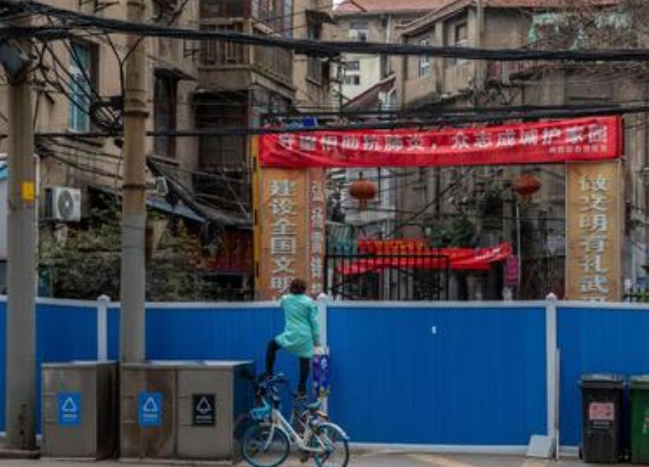
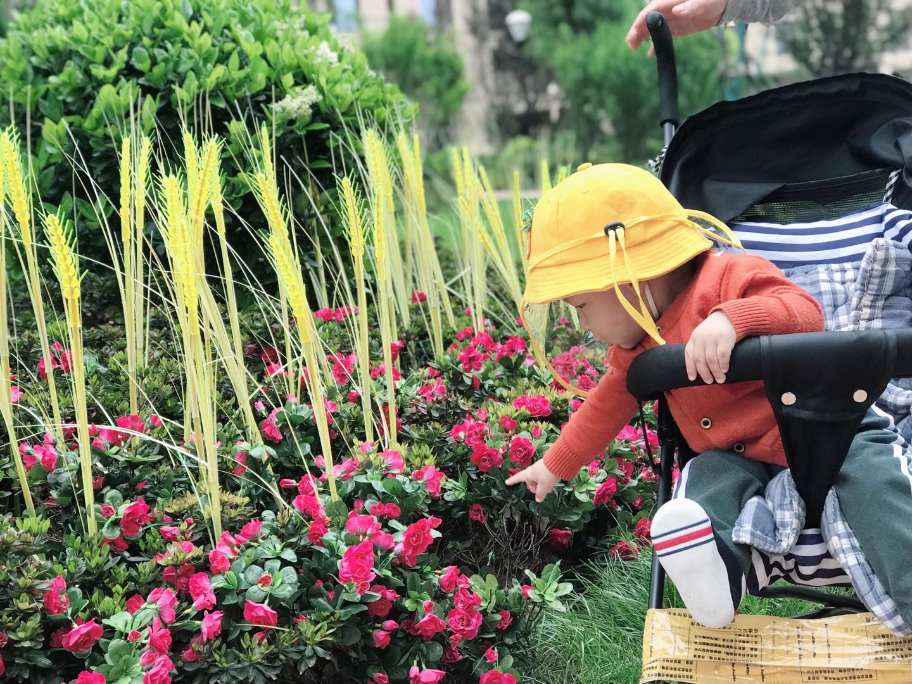
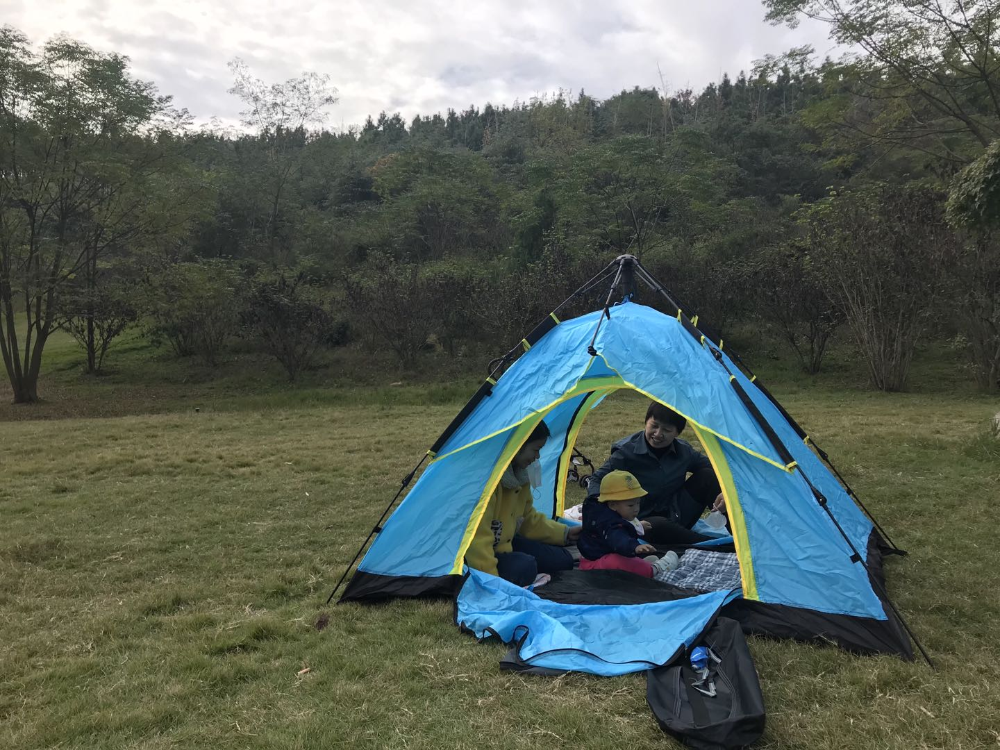

2020，我在武汉的这一年的故事
缘起
距离上一次写年度总结已经有4年了，毕业工作后整个人似乎就总是处于慌慌张张的生活状态当中，忙着工作，忙着买房，忙着结婚…回看几年前记录下的文字不免想到，要是这几年能抽时间记录下自己的生活状态，对自己的认识是否会更深几分？
作为小市民阶级，2020年的确极具魔幻现实风格。尤其对于生活在武汉的人来说感受肯定更是非比寻常。尤其是在家“关禁闭”提心吊胆的几个月。回想这一年的经历，觉得还是值得记录下这一年的故事的。
封城
对于早在19年底网上谣传SARS的时候起，我就开始在上下班的路上自觉的戴上了口罩，当然一方面也是因为口罩可以御寒。然而那时候起我就一再嘱咐家人，带孩子出去玩的时候尽量避免去人多的地方。然而在这人心惶惶的时候，元旦后的几天孩子突然发烧了，好在验血报告显示只是病毒性感冒，吃了点药就退烧了。元旦时武汉的跨年活动参加的人还是那么多，光谷广场依然热度爆棚。当时同事间还在讨论现在的年轻人真是啥都不怕。很多大V和自媒体声称我们经历过非典这样的疫情，有着世界上最有经验的公共卫生体系，武汉又有我国最高级的P4病毒研究所，这点病毒不算啥。而且有专家组在武汉评估过，告诉大家放心过年，疫情可控、可防、可治。连百家宴这样的活动都还在正常的开展！甚至很多不明真相的人在朋友圈戏谑性的发“我是武汉人，莫挨老子”的这类图。
直到春节放假前几天形势严峻起来了，那天是腊月二十六了，放假回去后舒服的睡了个觉，腊月二十七外面看起来还是在迎接新年的一片热闹之中。 我们很早就计划着大年初一就回到随州的老家，然而腊月二十七的晚上突然听说武汉要封城！！！听到这个消息我的第一反应就是我们是不是要赶紧回老家。腊月二十八一大早我就跑到我爸妈的房间跟他们说要封城了，我们赶紧收拾东西回老家吧！执拗的父母就是不信要封城，他们的观念中武汉偌大的城市怎么可能说暂停就暂停呢。说不动他们也就没办法回家了，我们就开始囤积生活必须品，那一天好多微信群都炸锅了，超市抢购一空，方便面都买不到之类的消息一时间都爆满了微信群。
对于留守在武汉的市民来说除了生活物资另一方面恐惧就是来自对疫情的状况的了解。腊月二十八上午十点武汉正式封城了，据媒体报道封城前大约有二三十万人离开武汉到了周边的县市。封城时我们都认为最多也就十来天就会解封的，所以我们都想着在家紧闭门窗熬过这十来天应该就好了。
逃离
封城后我们在家的活动范围就仅限于卧室到客厅，客厅到厨房，连阳台都成了我们封闭的区域了。整天除了陪着半岁多的孩子玩，就是坐在沙发上刷手机。对于大人来说还好，最难的可能就是小孩了，平时一天出门三四次的孩子突然把他关在家里，难免他会不断的指着大门尖叫。武汉封城后周边的市都陆续传来封城的消息，年三十的晚上从广东回随州准备过年的亲友告诉我们随州可能也将封城了，他们很多都在年三十的晚上连夜再赶回广东去。眼看局势越来越严峻，十天半月怕是也难得解封了，再加上听到这些消息，考虑到孩子这么小，武汉的医疗资源眼看就几乎耗尽，我们呆在武汉的风险也太大了。年三十的晚上我们也开始计划着初一早我们就逃去广东好了，虽然我们知道武汉已经封了城，高速的各个通道都已经关闭了，但我们想着那么多国道和小路，不至于连武汉都出不去吧！况且孩子这么小，呆在武汉风险确实太高了。
早上我们匆忙的收拾了东西，吃了早午饭，把小孩裹得严严实实的，都戴紧口罩在匆忙中就开车出发了。外面的路上车异常的少，冷清的像是一座空城。因为高速封闭，开启导航给我们指引的都是一些国道，走到武汉的边界的时候基本上都是出现下图这样的情况，一路上在这些封路的地方看到了很多跟我们类似情况的人，他们也都是想着赶紧逃离。
在绕了七个多小时之后，眼看天就快要黑了，希望也越来越渺茫了。加上半岁的孩子在一路颠簸中已经开始不适。考虑到返程中是否也会出现这种封路的情况，我们在一路沉默中掉头往回走了。返程中路上遇到了好几个测温登记的地方，工作人员都是穿着防护服“全副武装”。返程还算顺畅，到下午六点多我们就回了，这也宣告了我们这次惊心逃离的结束。
居家隔离
逃离的失败后我们唯一能做的就是做好防护，精打细算各种生活用品，不到万不得已绝不出门！这样坚持了差不多一个礼拜，新闻中每天爆出的数据也越来越多，情形越来越消极，出门采购一次物资就尽量多采购。居家隔离那段时间的记忆好像比较模糊，最大的感受就是生活困难！吃的东西不仅买不到，即使买得到也是异常的贵！尤其我所住这种还建社区，没有专门负责物资供应的，连小孩的奶粉和尿布都是在各个群里面到处问才买到的。还建社区没有天然气，使用的还是煤气，疫情影响下之前煤气供应公司也处于歇业状态，这直接导致了我们从正月初几就没有煤气使用了，靠着电磁炉我们坚持了一个多月。 那段时间里，每天早上起来的第一件事情就是看疫情数据，前一天新增了多少，治愈了多少。当时有一个小程序可以查询附近感染了多少人，那个小程序也是每天必刷新的。看着周围1公里范围内感染人数的增多，心中的恐惧也随之增多。然后就是在各个微信群里面看最近是否有团购信息。后来物资的供应慢慢的恢复的正常，各种团购群也是加了一大堆。隔离的这段时间里也出现了很多感动人心的事情，身边有自愿去火神山医院做志愿者的朋友，也有为了社区物资供应，自发在天天在群里值守青年志愿者。记得当时我母亲吃的高血压药快没有了，但是社区都是封闭的，没办法出去买药，想到我买房的那个小区的物业工作人员可以出入小区，所以联系他们请求帮助买药，好在租住的社区里小区不远，而且物业工作人员也有药店的联系方式，联系好后的第二天就帮我买好了药，并送到社区的门口，从隔离护栏外把药给扔进来。 
我所在的社区里面是有一个社区医院的，但是疫情的原因，我们基本上都是避开这个医院。在物业工作人员帮我买药后的几天，物业的人联系我，说是小区有位七十多岁的老人，身患有病，常年注射一种药，这种药药店是不能卖的，问我是否能去社区医院帮他买一下。因为社区和小区之间是封闭的，他们进不了社区。听了他的描述我戴好两层口罩，穿好用来做防护服的冲锋衣，戴上眼罩和帽子，全副武装的去药店给买了药，然后又是从隔离栏的门缝中将药送出去，回去后就把全身的衣物都丢在阳台上，走过的地面上用84消毒（那时候根本买不到酒精，家里唯一的酒精就是大半瓶100ml的用来外伤消毒的医用酒精）。 说到这里必须为小区物业点个赞，虽然我不在小区里面住，但是因为还建社区无法团购，我还参与了好几次小区的团购活动，都是物业的工作人员把东西送到我所住的还建社区门口给我的。
解封
4月初，湖北省内城市陆续恢复交通。在家里已经宅了两个多月的我们也陆续收到公司复工复产的通知，父母第一次来武汉就被封城耽误了两个多月，一有恢复交通的通知，父亲就驱车直接回随州隔离，然后隔离期满驱车赶往广东。这也导致父亲五一，十一路过武汉而不敢入。
4月8号我们恢复了上班，上下班的路上武汉显得格外的凄凉，往日拥堵的交通如今变得异常的通畅，尤其是下班后回家的路上，看着少有人烟的道路上总像是活在了错觉之中。和网上说的一样，出门就是“一枪接着一枪”的测体温，出门额头测一枪，出社区额头测一枪，进公司园区测一抢，进公司测一枪，在公司期间，上午一枪，下午一枪。上下班路上还可以看到带着各种防护设备的行人，有的用起了防毒面具的那种工业用n95面罩，有的使用塑料雨衣充作防护服套在身上，有的头戴两三层口罩。所有人都刻意的保持人与人之间的距离。
解封后的生活物资上再也无需多操心了，而且这时候各种团购平台也相当的成熟，品种也是相当的齐全。在可以出社区的时候起，我就在考虑搬家了。因为之前受够了在还建小区没有物业，导致物资没人管的日子，每天还在小区群里看到别人在家享受各种物资供应。考虑离装修完已经有近半年了，有毒气体也散的差不多了。4月底，在咨询了社区之后就打包搬家了，搬家整理，直到五一期间，才基本算是安顿妥当。武汉这时候已经算是比较安全了，关不住的孩子也可以在小区里面逛一圈了。 
回归正常
五一之后的武汉基本上算是恢复了正常。路上慢慢的又热闹起来了，关闭的门店渐渐的恢复了营业，周边的工地又开始传来轰隆轰隆的声音，旁边的武广高铁线路隔个三五分钟就有高铁飞驰而过。为促进旅游业，武汉各大景点免了门票，这给带着孩子的我们有了好多游玩的选择，这短短的几个月，我们带着孩子几乎去遍了方圆三五十公里内的景点。

2020年陪孩子成长的一年里，可能是因为看到的世间百态，似乎渐渐的知道了自己想要的是什么样的生活，什么对于自己更加重要。 回归正常后的日子过得非常快，还没来得及做什么就到年底了。计划看的书也没看完，计划研究的项目也慢慢淡出了视线，唯有生活过得却是越来越真实。
以上就是我2020年的故事，那么你的呢？
- 原文作者：Binean
- 原文链接：https://bzhou830.github.io/post/20201226%E5%9C%A8%E6%AD%A6%E6%B1%89%E7%9A%842020/
- 版权声明：本作品采用知识共享署名-非商业性使用-禁止演绎 4.0 国际许可协议进行许可，非商业转载请注明出处（作者，原文链接），商业转载请联系作者获得授权。